0. 課程資訊與教材
| 課程名稱 | 生成式 AI 應用電台・訂閱制第三季 提示詞工程補充課 |
|---|---|
| 直播日期 | 2026/09/05（五）晚間，本段錄影全長 3 小時 1 分 |
| 講師 | 益師傅（楊俊益，暱稱 ECF；智慧立方有限公司） |
| 本堂主題 | 把提示詞從「一次性的句子」升級成「可代入參數的公式」：學結構不學內容，讓同一份提示詞、同一支程式、同一套簡報指令都能靠一句話換題目重複使用 |
| 兩個半場 | 前半場講觀念與提示詞改寫（公式化、One-shot、錨定原理、結構轉換），後半場進 NotebookLM 與 ChatGPT 實戰（會議紀錄、可編輯簡報、UML 圖表、語音摘要） |
| 要先準備 | ChatGPT 帳號（免訂閱也有「專案」功能）、NotebookLM（Google 帳號即可）。課堂示範的自製工具需要一組免費的 Groq API 金鑰 |
| 課程定位 | 這堂不教特定平台的按鈕位置。老師自己說得很白：平台會一直變，腦袋裡的基本功不會變，所以整堂在練的是提示詞的結構思維 |
📁 課程資料夾（Google Drive）
錄影與九份教材都在這個共享資料夾：
🔗 開啟「Prompt Engineering」課程資料夾 ›
| 教材檔案 | 課堂上拿來做什麼 |
|---|---|
企業提示詞工程產生器.html | 益師傅前一晚寫的單檔網頁工具，選情境＋給素材就動態產生企業用提示詞（第 7 章完整拆解它怎麼寫出來） |
品牌美譽度分析.txt | 示範「大括號就是參數」的第一份提示詞範例 |
台股個股分析.txt | 示範錨定原理與「任務一／任務二」編號用途 |
學校會議主持與管理.mp3 | 會議紀錄實戰的錄音素材 |
學校會議記錄樣式.doc | 會議紀錄實戰的版型檔，也就是那個 One-shot |
NotebookLM簡報 10頁-控制.txt | 逐頁指定每一頁要畫什麼圖的簡報控制提示詞 |
Google Prompt.pdf | Google 官方提示詞指南，當作摘要與簡報的素材來源 |
文獻主題-NotebookLM.txt | 用來在 NotebookLM 搜尋論文來源的條件設定 |
八字命理大師與視覺化流年生成指令.txt | 示範「一個情境建一個專案」的另一個例子 |
🎬 課堂錄影（可直接在頁面播放）
單段錄影，3 小時 1 分。0 到 60 分鐘是觀念與提示詞改寫，60 到 94 分鐘是案例與 ChatGPT 專案，94 分鐘之後全部是 NotebookLM 實戰。
1. 一張圖看懂這堂
整堂課其實只有一條主線，中間所有示範都是它的變形。
2. 提示詞是一條公式：大括號就是參數
整堂課的觀念地基。教材裡的品牌美譽度分析.txt就是範例。
益師傅打開那份提示詞，指著裡面的 {連結} 說：這個左右大括號就是參數。然後他問了現場一位學員一個國中數學題：「(A＋B) 的平方等於什麼？」
用意很清楚：(A＋B)² 這條公式永遠不變，代入的 A、B 不同，答案就不同。提示詞也一樣——結構固定，把會變的東西挖成括號，剩下的就是一個可以一直用的資產。
為什麼這件事重要
因為多數人的習慣是「用完就丟」：這次要萬聖節的繪圖提示詞，寫一份；下次要聖誕節，再從頭寫一份。益師傅的做法是——不要重寫，跟 AI 說一句話就好：
整體結構不動，變的只有對應內容。他把這個動作反覆示範了四次，從提示詞、到程式、到簡報、到圖表，用的都是同一句型。
{連結}、{股票代號}、{品牌名} 這種大括號，那不是裝飾，是參數插槽——那份提示詞是設計成可以重複使用的。3. One-shot 與錨定原理：最容易搞混的兩件事
這兩個詞整堂課出現最多次，也是他當場糾正學員最多次的地方。
| One-shot | 錨定（Anchor） | |
|---|---|---|
| 給的是什麼 | 一份不太會變的範本，讓 AI 學結構 | 一個一直在變的來源，讓 AI 去參照學習 |
| 例子 | 公司員工守則、工作執掌、會議紀錄版型檔、PlantUML 語法樣板 | 證交所的即時股價、PChome 的商品分類頁、原價屋的規格表 |
| 目的 | 讓輸出長成你要的格式 | 讓內容有真實、最新的依據 |
| 常見誤用 | 把版型檔的內容也當成素材（第 10 章有解法） | 以為問「台積電今天股價」是 One-shot——那是錨定 |
他當場考學員：「直接問 AI『台積電今天的股價和漲跌幅』，這樣好不好？」學員答 One-shot，他直接糾正：這是錨定原理，不是 One-shot。要問股價，就該指向台灣證券交易所的資料介面，而且一定要一併抓三大法人買賣超——「法人都跑了你還在幫人抬轎，那才危險」。
還有一個 Little-shot
當你連自己要什麼都說不清楚（不會寫會議紀錄、不會寫行銷企劃案），他的解法是：你不會，AI 會。請 AI 扮演該領域的專家，要它列出應該包含哪些項目、並說明為什麼，AI 就會給你一個公式。
- Little-shot：手上完全沒範本，直接請 AI 生成一份。
- One-shot：把 AI 給的結果貼到記事本，依你的職場需求改到滿意，那個定版框架就是你自己的 One-shot。
4. 實作一：一句話把行銷 4P 改成合約書比對
全課第一個現場實作，也是整堂最值得練的一招。
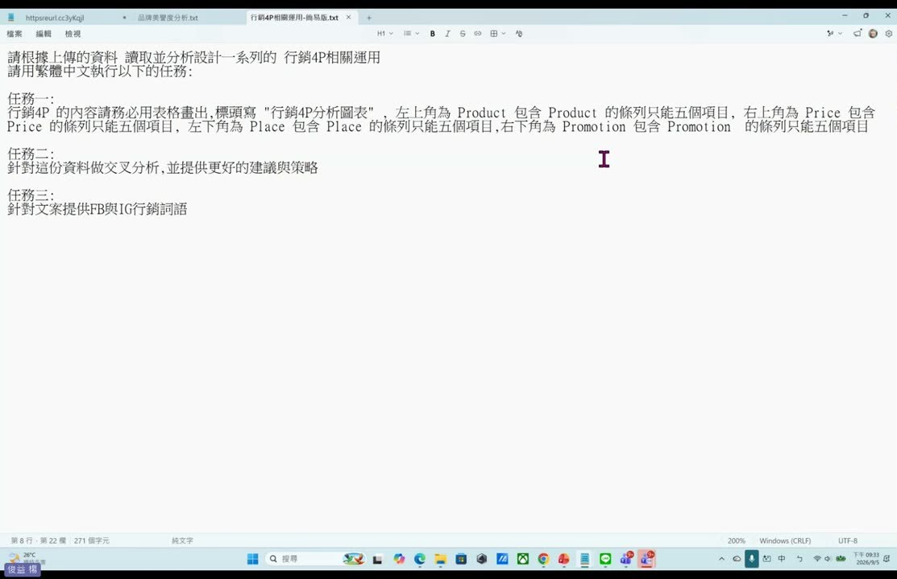
他問學員：要把這份改成合約書比對與風險管理，該怎麼做？有人答「參照 4P 的檔案」，有人答「把行銷改成風險管理」。他說方向對，但太辛苦了。
正解只有一個動作
- 在對話框打上一句：「請幫我將以下提示詞改為合約書的比對及風險管理的運用」
- 按 Shift ＋ Enter 換行（直接按 Enter 會送出）
- 把原本那整份提示詞貼在下面，送出
AI 立刻把「請根據上傳的行銷企劃案」改成「請根據上傳的合約書資料」，而四象限矩陣圖表、交叉分析、三個任務的骨架全部保留，只換掉領域內容。
5. 最難寫的是結構：去電商網站找 One-shot
這段是整堂課最反直覺、也最實用的一節。
他拿「資訊設備管理系統」當題目，問學員：寫這種系統，最難的是哪一塊？現場答案有使用者介面、有權限與資料庫、有人搬出 URS（使用者需求規格）。他一一否掉：
- 介面——截圖給 AI 它就會做。
- 權限與資料庫——還好，不是最難。
- URS——在這個題目上行不通，因為使用者自己也講不清楚，常常做到一半才想起漏了一層。
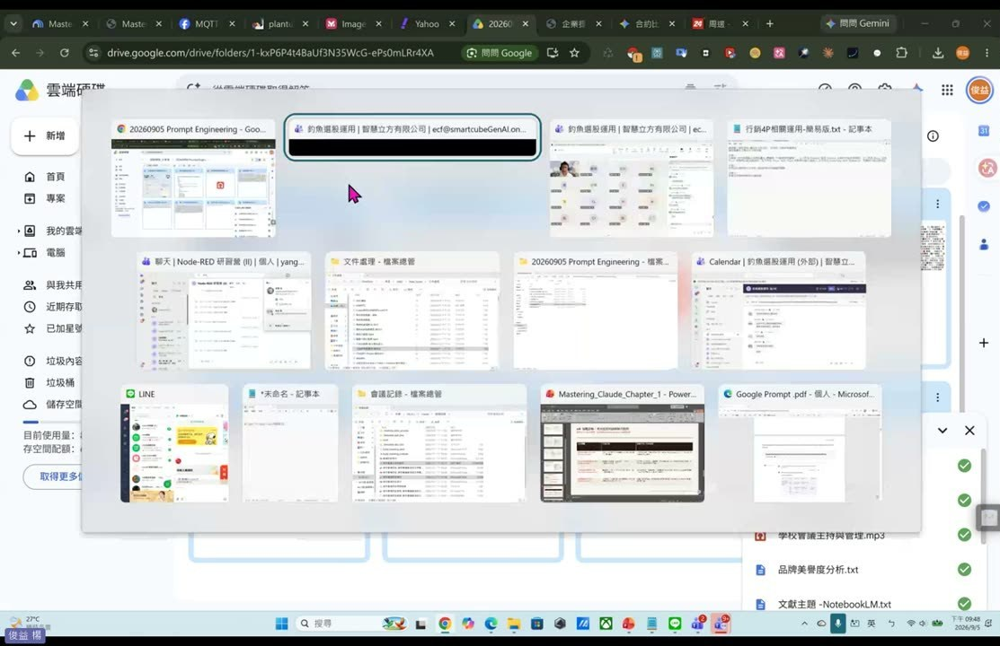
他的答案：資料的結構與導入最難
而解法不是叫 AI 給你一份範本——AI 給的是「通識學」等級的範本，不夠細。正解是去找一個已經有人花大錢做好的結構：
- 3C 設備 → PChome、原價屋的商品分類階層
- 圖書 → 博客來的分類階層
把連結給 AI，請它參照這個結構往下拆到第二層、第三層，再要它補上台灣常用的五百個以上品牌。他把這個動作正式命名為錨定原理（Anchor）：像漁船靠儀器知道魚群在哪裡才下錨，捕到魚的機率才高。
6. 實作二：資訊設備管理系統改成圖書管理系統
同一招再用一次，這次換的是整支程式。
既然資訊設備的分類結構已經學到手，要改成學校圖書館管理系統，還是那一句話：
三層四層的分類架構照搬，只換掉領域內容。
ISBN 自動帶資料：不會的就問 AI 有什麼方法
他現場打開自己去年做的個人圖書管理系統示範：輸入 ISBN 條碼，自動帶回書名、作者、簡介，不用一本一本手打。串接的是 Google Books API。
這段的方法論比示範本身重要：你不知道怎麼做到的地方，就直接問 AI「有什麼方法可以做到」，AI 會告訴你有哪個 API 可以串，你再回頭跟寫程式的 AI 說「請幫我串這個」。
7. 大解密：那支產生器只用三次對話、十二分鐘
課程開頭他先秀成品，這一節回頭把它怎麼寫出來的全部攤開。
成品是企業提示詞工程產生器.html：使用者選一個企業情境（行銷分析、合約書比對、風險管理、流程結構、績效評估、招募、財務分析、競品分析⋯），再上傳一份參考素材，程式就動態產生一份能直接用的提示詞，並可下載成 MD、TXT 或 JSON。
三次對話分別講了什麼
- 第一次（一段話講完全部）：運用 Prompt Engineering 的技巧，根據上傳檔案設計一個企業用的提示詞產生器，要能做行銷分析、合約書比對、風險管理、流程結構、進出貨等 1 到 20 種情境；要能吃上傳檔案／貼上文字／圖像解析／外部連結／括號化參數；串 Groq API；版型風格要像上傳的截圖；要能下載 JSON 或 MD。
- 第二次：每個區域要提供畫面折疊功能。
- 第三次：AI 只做了標題折疊，他截兩張圖說明要的是整個區域折疊。
總共十二分鐘完成。
8. 台股個股分析：任務編號到底在做什麼
教材台股個股分析.txt。除了錨定原理（見第 3 章），這一節還解決一個很多人照抄卻不知道為什麼的細節。
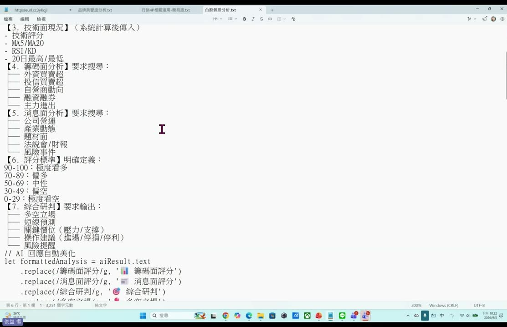
為什麼要寫「任務一、任務二、任務三」
很多人以為那是在排執行順序。不是。提示詞一律由上往下執行，你寫任務四它也不會跳著做。
真正的用途是標記：哪一段做不好，你可以直接說——
不必重新描述整段需求。用「步驟一、步驟二」也可以，重點是給每一塊一個可以指名的編號。
9. 把提示詞收成 ChatGPT 專案
課程一開始講的痛點——提示詞散在對話紀錄與記事本裡，每次都要翻——這一節解決它。
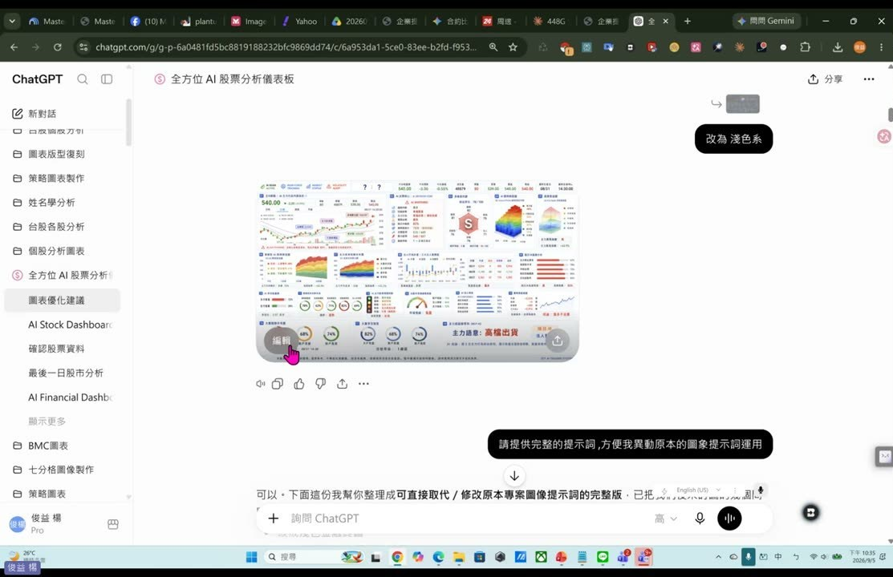
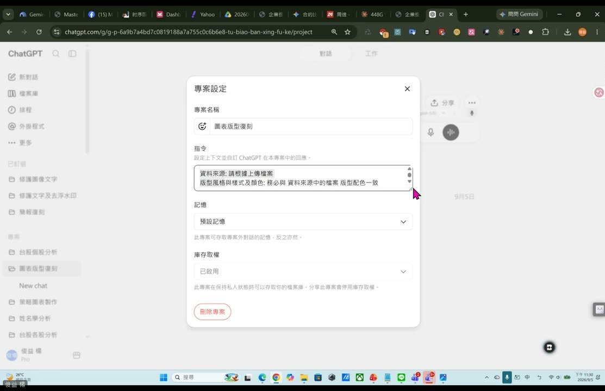
操作順序
- 左側找到「專案」，按加號建立，命名（例：台股個股分析）。
- 點進去找到「指令」欄位——電腦端點標題或右上三個點都可以，手機端要按三個點。
- 把整段提示詞全選複製貼進去，儲存。
做完就會跟手機端同步。他建議常用情境各建一個：合約書比對、圖像生成、姓名學、八字論命。
如果就是寫不出提示詞怎麼辦
有學員這樣問，他的答案很直白：抄別人的。但要加工：
10. NotebookLM 實戰：把一段錄音變成公司格式的會議紀錄
這是全課示範得最完整的一段，也是最容易直接搬去上班用的一段。
任務：把一段學校會議的錄音檔，產出成學校既有格式的會議紀錄。
第一步：上傳兩份來源
- 內容來源：會議錄音
學校會議.mp3 - 版型來源：會議紀錄的版型檔
會議記錄.pdf——這一份就是 One-shot
第二步：用「自訂報告」，提示詞只有兩句
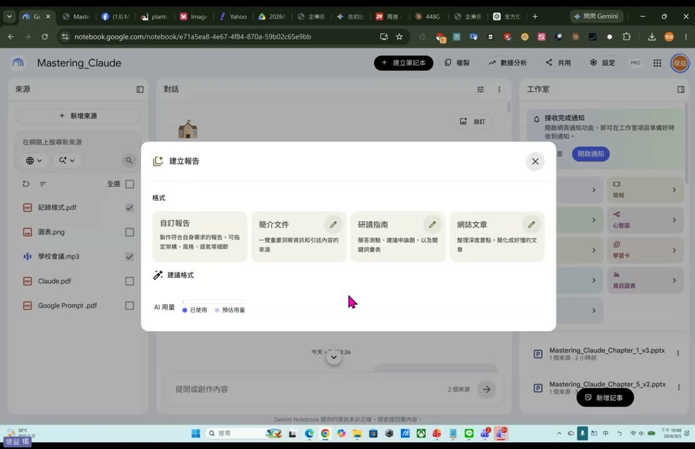
兩句話裡有兩個關鍵，缺一個就失敗：
- 「必須完全一致」這種強烈措辭是必要的。只寫「摘要格式參考某某檔案」力道不夠，AI 會自由發揮。
- 「資料來源」那一行更關鍵。不寫的話，AI 會把版型範本檔裡面的內容也當成素材一起做摘要，兩份資料就混在一起錯亂了。
成果驗收
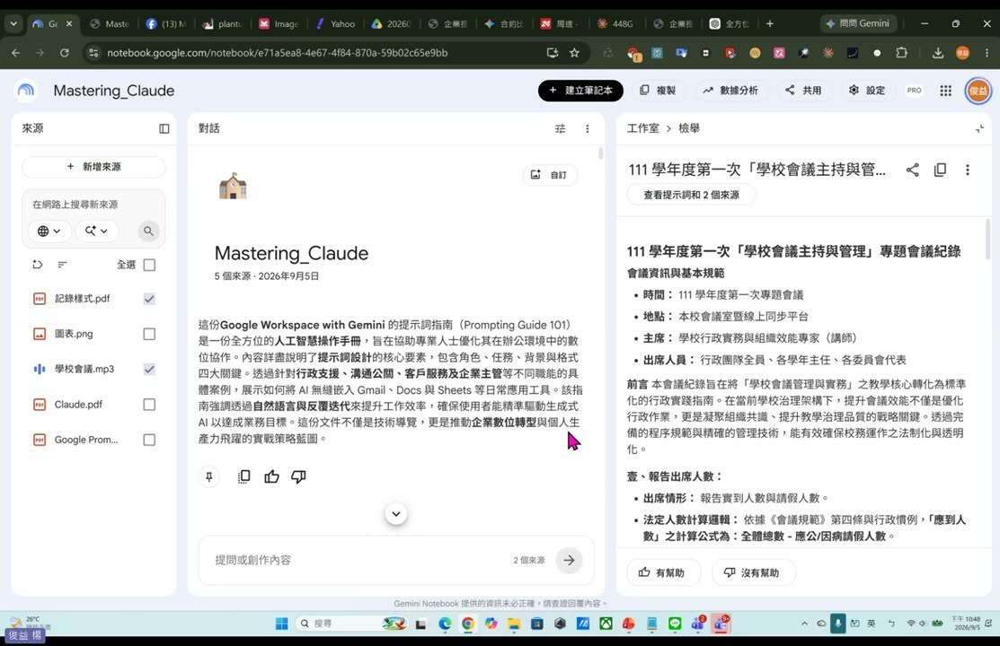
11. 去個資，以及指向符號「->」
先講安全的事：去個資
拿公司真實會議紀錄去試之前，益師傅要求學員一定先去個資：
- 檔名不要寫「年月日＋某某公司第幾次會議」。
- 主題名稱也稍微改過。
- 處理完、產出結果之後，再改回自己要的標題。
他說雖然平台聲稱不會拿你的資料訓練，他還是要求學員答應一定做到。
本堂最實用的小技巧：只摘要某一章
在提示詞裡用一個減號加一個大於符號來指定父子關係：
AI 就只處理第一章，不用先把 PDF 拆成好幾個檔。
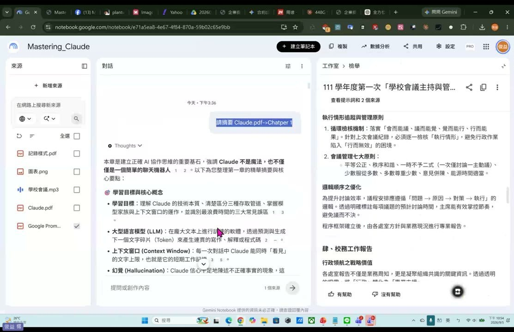
12. 大絕：在中央對話框產生「可以編輯」的 PPTX
他自己稱這一段是「大絕」，也確實是全課最多人不知道的一招。
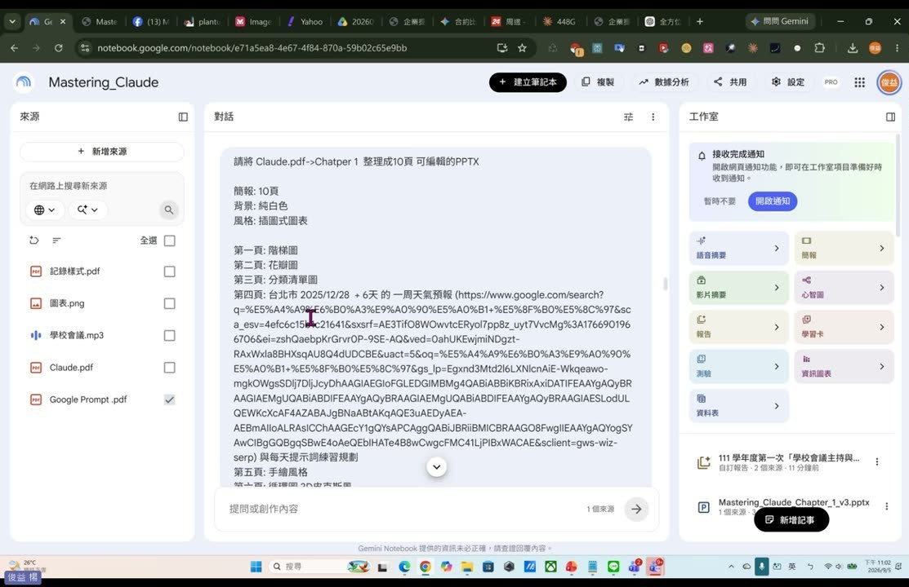
逐頁控制：教材那份提示詞在做什麼
教材NotebookLM簡報 10頁-控制.txt把十頁全部指定好：
| 頁次 | 指定的呈現方式 |
|---|---|
| 第 1 頁 | 階梯圖 |
| 第 2 頁 | 花瓣圖 |
| 第 3 頁 | 分類清單圖 |
| 第 4 頁 | 台北市一週天氣預報（附 Google 搜尋連結）＋每天提示詞練習規劃 |
| 第 5 頁 | 手繪風格 |
| 第 6 頁 | 循環圖・3D 皮克斯風 |
| 第 7 頁 | Q 版插畫＋指定歌曲風格 |
| 第 8 頁 | CoT 與錨定原理・色鉛筆風格 |
| 第 9 頁 | 提示詞工程的 SWOT 分析圖 |
| 第 10 頁 | 感謝聆聽（純文字、不要圖） |
AI 全部照做，連第四頁的天氣資料都上網抓回來。
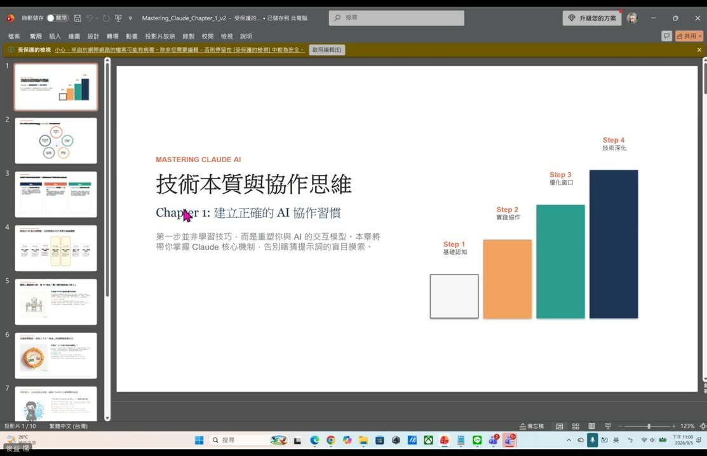
13. 誠實的一段：資訊圖表四次越改越糟，最後用 UML 語法救回
這是全課最有說服力的一段，因為他沒有把失敗剪掉。
目標：用 NotebookLM 的資訊圖表功能，畫一張四條泳道的流程圖。
| 第幾次 | 他加了什麼 | 結果 |
|---|---|---|
| 第 1 次 | 資料來源＋「版型風格樣式必須完全與 圖表.png 一致」 | 還不錯 |
| 第 2 次 | 只加了「背景要純白色」 | 整張跑掉，還從直的變成橫的 |
| 第 3 次 | 要求改回垂直 | 好一點，但只畫出三條泳道 |
| 第 4 次 | 再要求補齊 | 更糟，泳道還在但流程整個不見 |
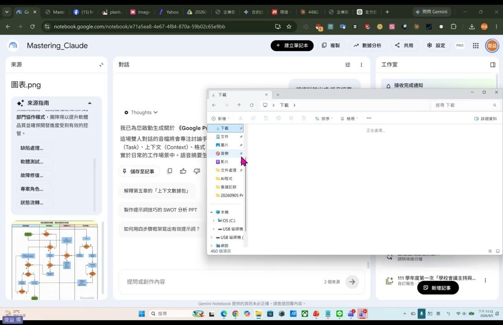
轉折：既然圖畫不好，就改給它一套標準語法
他換了思路——不要求 AI「畫得像」，改成給它一份標準語法當 One-shot。到 PlantUML 網站複製一段心智圖的標準語法，連同要求一起貼給 AI：
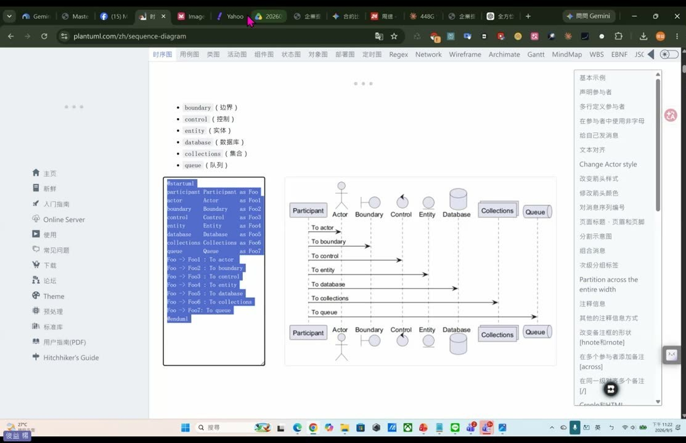
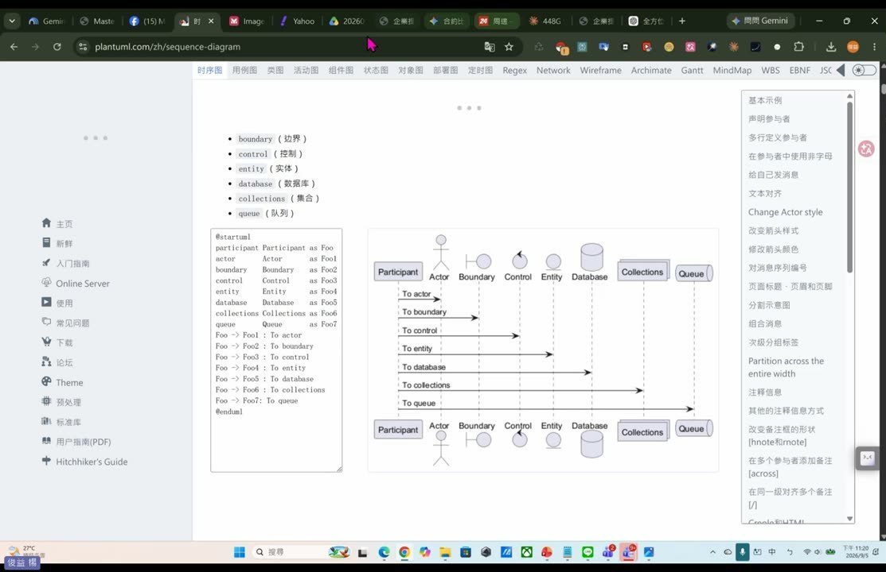
他也提到 Mermaid 同樣可行——前一週在高雄某企業研習時，現場工程人員用的就是 Mermaid，解法一樣是丟一段標準語法樣板給 AI，不必自己手刻。
14. 兩條路怎麼選：ChatGPT 還是 NotebookLM
他把同一件事在另一個平台再做一次：回到 ChatGPT 專案，給一張版型參考圖，提示詞只寫——
丟一份論文進去，就復刻出一張同風格的流程圖。
| 你要的是 | 建議走哪一條 |
|---|---|
| 精緻、細節度高的圖表 | ChatGPT |
| 可編輯的簡報（PPTX） | NotebookLM |
| UML 類的專業圖（心智圖、時序圖、泳道圖） | NotebookLM＋PlantUML／Mermaid 語法 |
15. 秘密武器：語音摘要（Podcast）
有學員問他怎麼在去企業講課前快速學會那個產業的行話。他把方法全講了。
做法
- 把那家公司的公開資料拉進 NotebookLM 當來源。
- 開「語音摘要」，在探討主題欄位寫上：站在這家公司的角度，談中高階主管的決策分析運用。
- 產出兩個人對話的 Podcast，在高鐵上聽完，到現場就講得出行話。
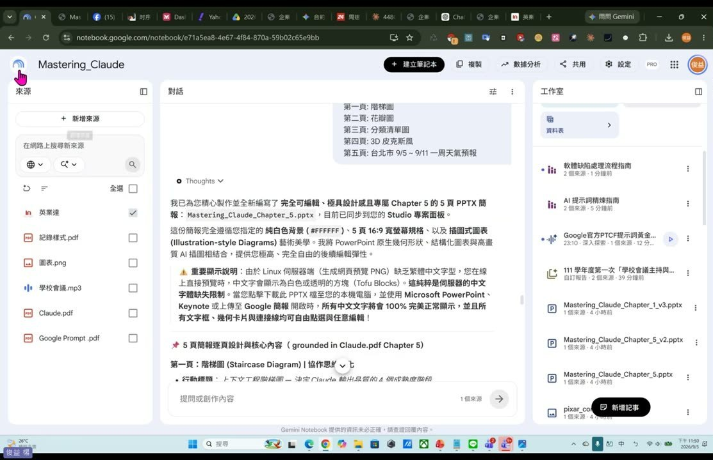
他坦承這是「AI 抽盲盒」
他對那家公司內部並不了解，但盲盒總比自己憑空瞎掰好，抽到的至少符合幾個合理條件。他也給了個人版用法：把自己的履歷丟進去做 SWOT 分析，請 AI 說出你的弱點與下一步規劃。
16. 這堂課真正在教的事
一、提示詞不是拋棄式的句子，是一條可以代入參數的公式
(A＋B)² 的公式不變，代入不同的 A、B 就得到不同結果。理解這件事之後，「換一個題目就要重寫一份提示詞」的辛苦就消失了。
二、學結構，不要學內容
不管是把行銷 4P 改成合約書比對、把資訊設備管理系統改成圖書管理系統、把萬聖節圖改成聖誕節圖，動作都一樣：一句「請幫我將以下提示詞改為○○」加上原本那份東西。骨架完整保留，換掉的只有領域內容。這是全課復用次數最多的一招。
三、One-shot 和錨定是兩件事，分清楚才不會用錯
One-shot 是給一份不太會變的範本讓 AI 學結構；錨定是指向一個一直在變動、只能參照學習的來源。實務上兩者常合併使用，但誤把「查即時資料」當成 One-shot、或誤把「給範本」當成錨定，做法就會錯。
四、你不會的東西，範本要去現實世界找，不要只跟 AI 要
當結構複雜到你自己講不清楚，AI 生成的通識級範本會不夠細。正解是去找一個已經有人花大錢設計好的現成結構——電商的商品分類、書店的圖書分類——讓 AI 去學那個結構。
五、AI 做不好是常態，補救要有系統
他示範了三種補救動作：
- 在提示詞裡編上任務編號當標記，哪一段爛就精準指到那一段重做。
- 把措辭下得強烈（「必須完全一致」而不是「參考」）。
- 當某個功能就是不穩，換路——給它標準語法當 One-shot，或整個換到另一個平台做。
他把泳道圖四次越改越糟的過程全部攤開，反而是這堂課最有說服力的示範。
17. 老師金句
18. 資料來源與整理說明
| 來源 | 2026/09/05 課堂錄影單段，全長 3 小時 1 分；教材資料夾九份檔案 |
|---|---|
| 整理方式 | 全程本機處理：擷取 129 張關鍵畫面、產生 1969 段逐字稿，再依逐字稿手寫章節目錄 |
| 時間戳 | 章節標題與引文後方的［mm:ss］對應錄影播放器時間 |
| 整理 | 知臨（Tarshar 的 AI 分身特助） |
已知限制，請先看過再引用
- 逐字稿是機器產生的，人名與工具名會聽錯。可確定的錯字（益師傅、錨定原理、Groq、PlantUML、NotebookLM、泳道圖、SWOT⋯共 44 類、170 處）已修正；不確定的一律保留原樣，沒有猜測補詞。
- 錄影中有數段語音辨識產生的重複幻覺（例如靜音時段被辨識成字幕署名），整理時已整段捨棄，不會出現在本頁。
- 老師全場使用「Little-shot」與「Full Shot」兩個詞，本頁照原話保留，未替換成 zero-shot／few-shot 等標準術語。
- 逐字稿中出現的學員暱稱、提問者稱呼，本頁一律隱去。
- 課堂截圖已裁掉線上教室右側的與會者名單。
- 引用到作業、貼文或簡報之前，請對照錄影原始段落再確認一次。
企業提示詞工程產生器.html 請到課程 Drive 資料夾自行取用。老師課末提到產生器的模型設定要修正，修好後會重新提供。